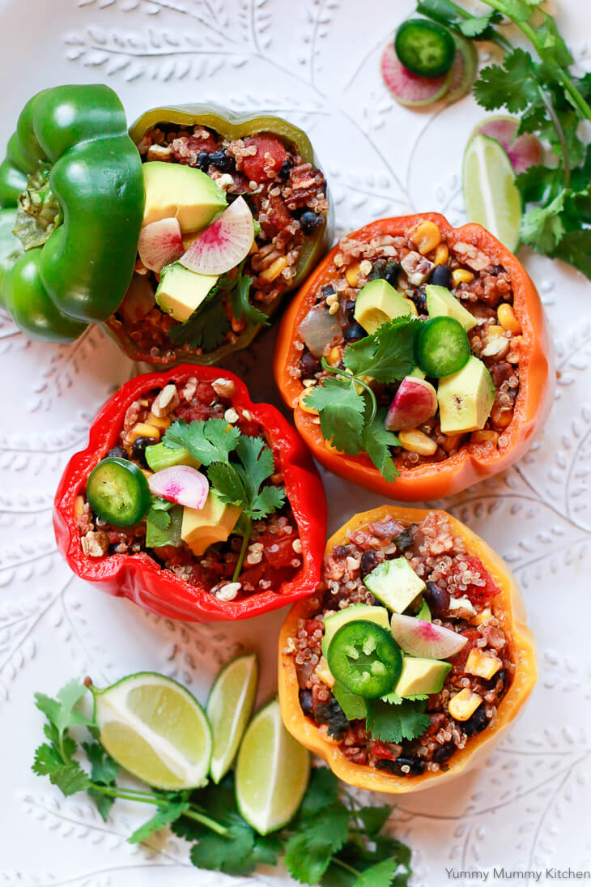

Stuffed Bell Peppers with Quinoa and Black Beans

Good choice! Quite an uncommon recipe don't you think? This is what makes it one of the best, it's originality. My grandma herself made a version of this, and I promise you, nothing beats a balkan's grandma cooking, or better said "babushka". So you know it's legit. Anyways, I won't hold ya any longer, let's get started!
The ingredients you are going to need are:
- 4 large bell peppers (any color)
- 1 cup quinoa, rinsed
- 1 can (15 oz) black beans, drained and rinsed
- 1 cup diced tomatoes
- 1 cup diced onion
- 1 cup diced zucchini
- 2 cloves garlic, minced
- 1 tablespoon olive oil
- 1 teaspoon ground cumin
- 1 teaspoon chili powder
- 1/2 teaspoon paprika
- Salt and pepper to taste
- 1 cup shredded cheddar cheese (optional)
- Fresh cilantro, for garnish
Alright, I'm sure you are now asking yourself what to do. You have the ingredients, but you don't know how to continue. Don't worry, I got you!
Here is what you need to do:
- Preheat the oven to 375°F (190°C).
- Cut the tops off the bell peppers and remove the seeds and membranes. Rinse them well.
- In a large skillet, heat the olive oil over medium heat. Add the diced onions and garlic, and sauté until translucent.
- Add the diced zucchini, ground cumin, chili powder, paprika, salt, and pepper to the skillet. Cook for about 5 minutes until the zucchini is slightly tender.
- Stir in the diced tomatoes, black beans, and quinoa. Cook for an additional 2-3 minutes until everything is well combined and heated through.
- Stuff each bell pepper with the quinoa and black bean mixture, pressing it down lightly as you fill them.
- Place the stuffed bell peppers in a baking dish. If using cheese, sprinkle the shredded cheddar on top of each pepper.
- Cover the baking dish with foil and bake in the preheated oven for 25-30 minutes, or until the bell peppers are tender.
- Remove the foil and bake for an additional 5 minutes to melt the cheese (if using).
- Garnish with fresh cilantro before serving.
Good job! I hope you enjoyed Babushka's speciality! Anyways, you can return to the main page here.